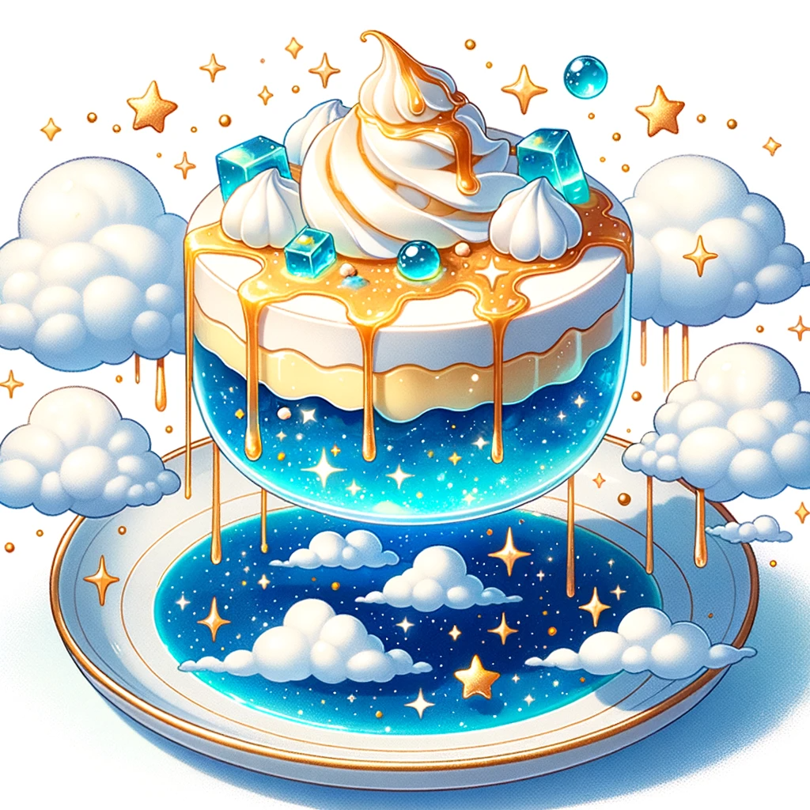

Sky Island Floating Pudding

Description
Wyper's favorite. Here's what you need to make it.
Ingredients:
- 1 cup of blue jelly (to represent the blue sea)
- 2 cups of cloud-like whipped cream or meringue
- 1/2 cup of golden caramel sauce (to represent the golden bell)
- Edible silver or gold stars for garnish
Steps:
- Prepare the blue jelly as per the packet's instructions and let it set in individual dessert glasses.
- Once the jelly is set, layer a thick cloud of whipped cream or meringue on top.
- Drizzle the golden caramel sauce over the cloud layer.
- Garnish with edible stars.